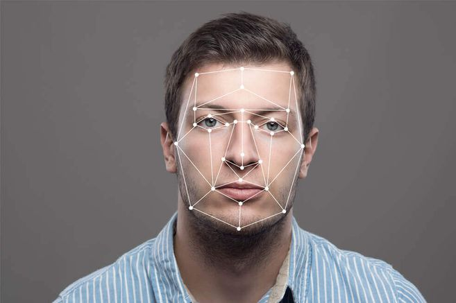

La lucha contra las tecnologías de reconocimiento facial
La organización de defensa de derechos humanos Amnistía Internacional (AI) lanzó este lunes una campaña global para buscar prohibir estas herramientas. Imagen de referencia.
Foto: Anonimo
“Existe el riesgo de que el reconocimiento facial se utilice como un arma por las fuerzas del orden contra comunidades marginadas por todo el mundo”, aseguró en un comunicado de prensa el investigador de Inteligencia Artificial y Derechos Humanos de Amnistía Internacional, Matt Mahmoudi.
“Desde Nueva Delhi hasta Nueva York, esta tecnología invasiva pone nuestras identidades en nuestra contra y mina los derechos humanos”, agregó.
La campaña de Amnistía Internacional, llamada “Ban the Scan” (Prohibir el escaneo), arranca en Nueva York para enfocarse más tarde en el uso de este tipo de identificación por todo el mundo en 2020.
El grupo asegura que los sistemas de reconocimiento facial son una forma de vigilancia en masa que viola los derechos a la privacidad y amenazan los derechos a la libertad de asamblea pacífica y de expresión.
Además, apuntan, exacerba el racismo sistemático, puesto que podría afectar más a personas de color, que ya sufren discriminaciones y violaciones de sus derechos por parte de las fuerzas del orden, dice Amnistía Internacional.
“Los neoyorquinos podrían salir y hacer su vida sin que sean rastreados por el reconocimiento facial. Otras importantes ciudades en EE.UU. ya han prohibido el reconocimiento facial, y Nueva York debería hacer lo mismo”, instó Mahmoudi.
En la Gran Manzana, Amnistía Internacional colabora en este esfuerzo con otras organizaciones como Inteligencia Artificial para el Pueblo, la Unión de Libertades Civiles de Nueva York o la Coalición para la Privacidad de Nueva York.
“El uso policial de la tecnología de reconocimiento facial sitúa a los neoyorquinos en perpetuas ruedas de identificación y viola nuestros derechos a la privacidad. El reconocimiento facial es ubicuo, no está regulado y debería estar prohibido”, afirmó en el comunicado Mutale Nkonde, fundadora y consejera delegado de Inteligencia Artificial para el Pueblo.
Este tipo de tecnología puede ser desarrollada copiando imágenes de perfiles de las redes sociales o de carnés de conducir sin el permiso de los individuos, tras lo un programa informático analiza imágenes captadas por cámaras de seguridad para tratar de identificar a personas.
Amnistía Internacional señaló asimismo que, aunque ciudades como Boston, Portland o San Francisco han prohibido su uso, la Policía de Nueva York sigue utilizándolo para “intimidar” a ciudadanos, “como se ha podido ver en las protestas de Black Lives Matter del año pasado”.
Por ejemplo, apuntan, el activista Dwreck Ingram fue grabado en vídeo en una de estas manifestaciones en Nueva York en junio de 2020, y el 7 de agosto decenas de policías trataron de entrar en su apartamento bajo acusaciones de haber atacado a un agente.
La organización, que afirma que uno de los agentes implicados en este intento de arresto fue fotografiado con un documento que daba a entender que se había utilizado un sistema de reconocimiento facial, asegura que la Policía informó incorrectamente de sus derechos a Ingram, trató de interrogarle sin la presencia de un abogado y rodeó su residencia.
“La Policía se fue solo después de que Dwreck transmitiera en vivo en las redes sociales el suceso”, dice Amnistía Internacional, que agrega que la Policía usó su foto de perfil de Instagram para identificarle, que luego fue utilizada en un cartel de “se busca” que las fuerzas de seguridad colgaron en su vecindario.
“Los activistas son específicamente objeto de estas tecnologías dado lo que estamos protestando y porque estamos tratando de desmontar un sistema del que la Policía forma parte”, declaró Ingram.
La campaña “Ban the Scan” comenzará con el lanzamiento de una página web donde los residentes de Nueva York pueden generar comentarios sobre el uso de la tecnología de reconocimiento facial, y más tarde presentar peticiones para saber exactamente dónde se está utilizando.
La página luego se ampliará en mayo próximo, cuando un “Ejército de Descodificadores” ayudará a geolocalizar aparatos que tienen la capacidad de llevar a cabo este reconocimiento facial en Nueva York.
Agencia EFE @EFEnoticiasESTE ES UN ADS